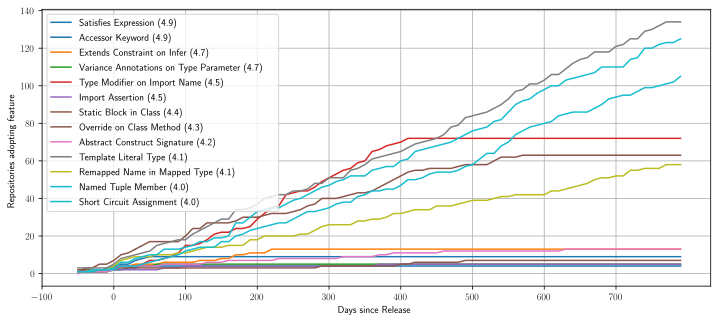

TypeScript’s Evolution: An Analysis of Feature Adoption Over Time
Joshua D. Scarsbrook, Mark Utting, Ryan K. L. Ko
Mining Software Repositories 2023 May 15th, 2023
Motivation
What features should we be studying…
- for Code Analysis?
- for Type Inference?
- for Developer Tooling?
How quickly do developers adopt new language versions?
Research Questions
- What are the most popular features recently introduced in TypeScript?
- How quickly are new TypeScript features adopted by projects that use TypeScript?
- How quickly are new TypeScript language versions adopted by projects that use TypeScript?
Dataset / Methodology
- Collect top stared repos from GitHub.
- 500 repos filtered to 454 containing TypeScript code.
- Download all repos and all commits.
- Filter for commits in the time period of interest.
- Between January 1st 2020 and December 31st 2022 inclusive.
- Analyze each TypeScript file in each commit and look for AST nodes corresponding to features.
Research Question 1
What are the most popular features recently introduced in TypeScript?
- Type Modifier on Import Name (70 Projects after 400 days of release)
- Template Literal Type (67 Projects after 400 days of release)
- Named Tuple Member (61 Projects after 400 days of release)
- Override on Class Method (52 Projects after 400 days of release)
Research Question 2
How quickly are new TypeScript features adopted by projects that use TypeScript?

Research Question 3
How quickly are new TypeScript language versions adopted by projects that use TypeScript?